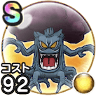

ウドラー
ほこらこころ最大コスト+4イオ属性ダメージ+12%植物系へのダメージ+7%悪魔系へのダメージ+5%ジバリア属性耐性+7%踊り耐性+7% / 7.5点
くわしい特徴
【ランク特殊効果】 こころ最大コスト+4イオ属性ダメージ+12%植物系へのダメージ+7%悪魔系へのダメージ+5%ジバリア属性耐性+7%踊り耐性+7%

ほこらこころ最大コスト+4イオ属性ダメージ+12%植物系へのダメージ+7%悪魔系へのダメージ+5%ジバリア属性耐性+7%踊り耐性+7% / 7.5点
【ランク特殊効果】 こころ最大コスト+4イオ属性ダメージ+12%植物系へのダメージ+7%悪魔系へのダメージ+5%ジバリア属性耐性+7%踊り耐性+7%